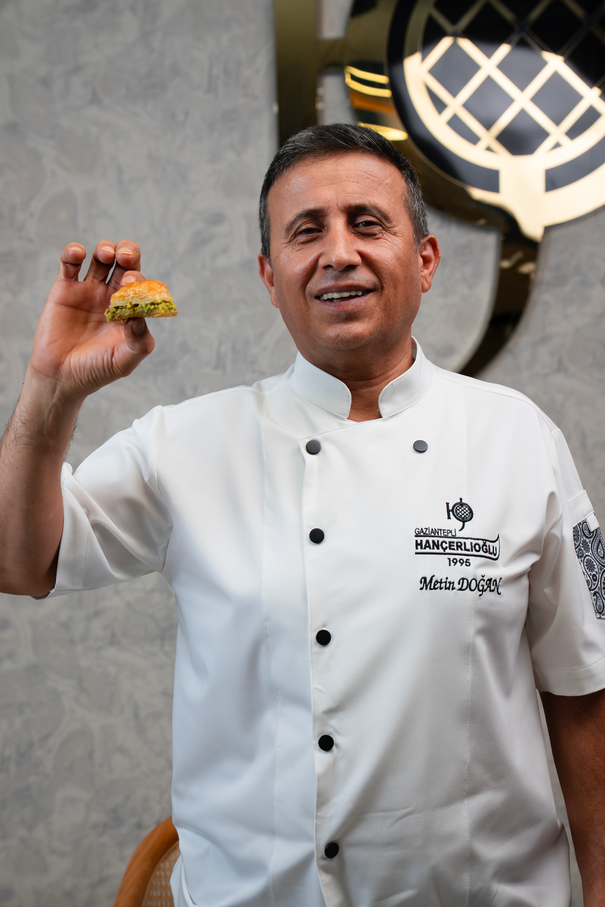
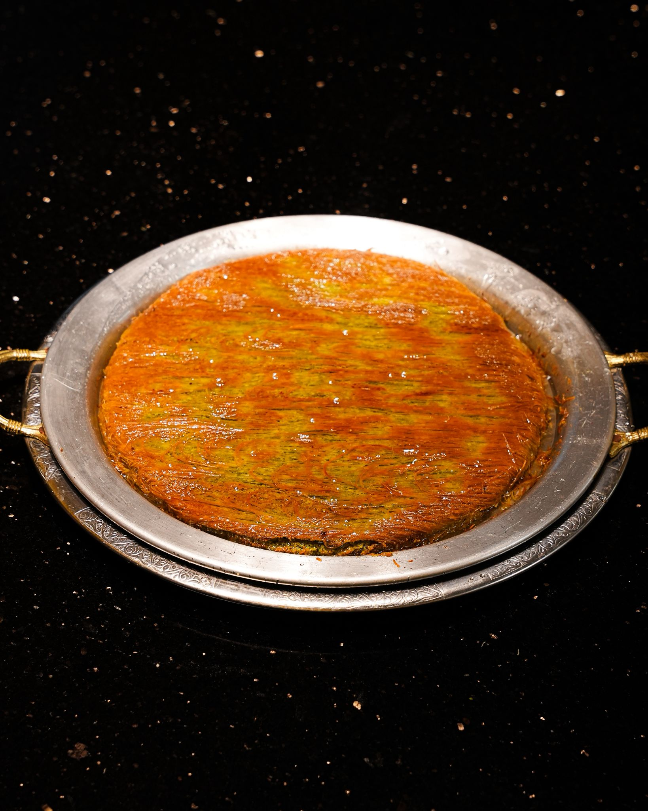
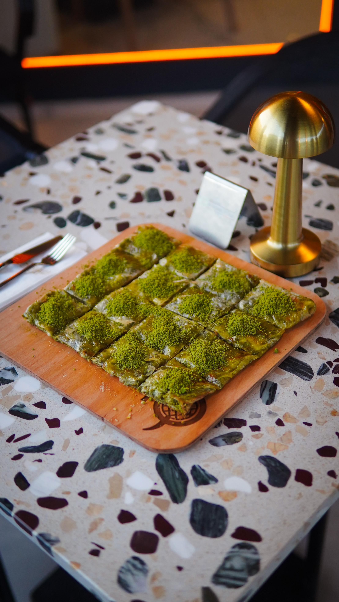
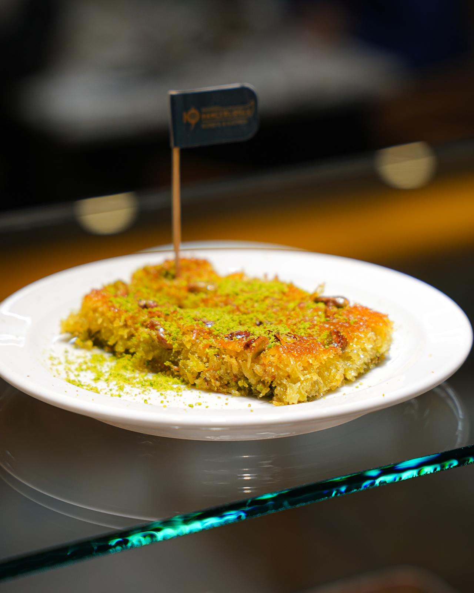

03 Ustalığımız
Gelenekten Gelen Ustalık
Yılların tecrübesini, özenle seçtiğimiz malzemeler ve geleneksel üretim yöntemlerimizle bir araya getiriyoruz.
Her ürünümüzü aynı özen ve kalite anlayışıyla hazırlıyoruz.
Hançerlioğlu
Erdemli · 1995
Metin Hançerlioğlu’nun Erdemli’de başlattığı lezzet yolculuğunu, geleneksel üretim anlayışımız ve yılların verdiği ustalıkla sürdürüyoruz.
— Felsefemiz
1995’ten bu yana geleneksel tariflerimizi, özenle seçtiğimiz malzemeler ve yılların verdiği tecrübeyle buluşturuyoruz.
Kaliteden ödün vermeden, her ürünümüzde aynı özeni ve lezzeti sunmayı amaçlıyoruz.
Geçmişimizden aldığımız değerleri korurken yeniliklere açık bir anlayışla geleceğe ilerliyoruz.

01 Kurucumuz
Hançerlioğlu’nun hikâyesi, 1995 yılında Metin Hançerlioğlu’nun Erdemli’de başlattığı lezzet yolculuğuyla doğdu.
Mesleğine duyduğu sevgi, emeğe verdiği değer ve kalite anlayışı, bugün Hançerlioğlu markasının temelini oluşturuyor.
Yıllar içinde büyüyen markamız, kurucumuzdan aldığımız değerleri koruyarak yoluna devam ediyor.
Metin Hançerlioğlu Kurucu
02 Hikâyemiz
1995 yılında Erdemli’de başlayan lezzet yolculuğumuz, geleneklerimize bağlı kalarak büyümeye devam ediyor.
1995
Metin Hançerlioğlu tarafından Erdemli’de temelleri atılan markamızın lezzet yolculuğu başladı.
2025
Yeni şubemizle hizmet alanımızı genişlettik, üretim kapasitemizi ve ürün çeşitliliğimizi geliştirdik.
.jpeg)
Yakında
Erdemli’de başlayan hikâyemizi Türkiye sınırlarının ötesine taşıyoruz. Halep’te açılacak ilk yurt dışı şubemizle uluslararası büyüme yolculuğumuza adım atıyoruz.
Gelecek
Geleneklerimizi ve kalite anlayışımızı koruyarak Hançerlioğlu lezzetlerini farklı şehirlerde ve ülkelerde misafirlerimizle buluşturmayı hedefliyoruz.
03 Ustalığımız
Yılların tecrübesini, özenle seçtiğimiz malzemeler ve geleneksel üretim yöntemlerimizle bir araya getiriyoruz.
Her ürünümüzü aynı özen ve kalite anlayışıyla hazırlıyoruz.

01 / 04
İncecik açılan yufkalar, Antep fıstığı ve ustalıkla hazırlanan şerbet. Geleneksel baklava lezzetini sofralarınıza taşıyoruz.

02 / 04
Çıtır kadayıf, özel künefe peyniri ve dengeli şerbetiyle geleneksel künefe lezzetini sıcak olarak sunuyoruz.

03 / 04
İncecik açılan hamuru, kaymağı ve Antep fıstığıyla hazırlanan geleneksel katmerlerimizi farklı lezzetlerle zenginleştiriyoruz.

04 / 04
Geleneksel üretim anlayışımızla hazırladığımız kadayıflarımızı, özenle seçtiğimiz malzemelerle buluşturuyoruz.
04 Hançerlioğlu
1995 yılında Erdemli’de başlayan hikâyemizi, bugün aynı tutku ve kalite anlayışıyla sürdürüyoruz.
Geleneksel tatlılarımızı yenilikçi lezzetlerimizle buluşturuyor, misafirlerimizi Hançerlioğlu’nun sıcak atmosferinde ağırlıyoruz.
Bizim için her ürün emeğin, ustalığın ve yılların tecrübesinin bir parçasıdır.
05 Uluslararası Büyüme
1995’te başlayan hikâyemiz şimdi sınırları aşıyor.
Geleneksel lezzetlerimizi farklı coğrafyalara taşıma hedefimiz doğrultusunda ilk yurt dışı şubemizi Suriye’nin Halep şehrinde açmaya hazırlanıyoruz.
Hançerlioğlu, çok yakında Halep’te.
HALEP · SURİYE · YAKINDA
06 Şubelerimiz
Hançerlioğlu’nun değişmeyen lezzetini ve misafirperverliğini şubelerimizde keşfedin.
Geleneksel lezzetlerimizi ve Hançerlioğlu ustalığını keşfedebileceğiniz adresimiz.
Merkez, Kazım Karabekir Cd. 68/DHançerlioğlu lezzetlerini keyifli bir atmosferde deneyimleyebileceğiniz sahil şubemiz.
Alata, Erdemoğlu Blv. No : 183 AYakında
Uluslararası büyüme yolculuğumuzun ilk adımı. Çok yakında hizmetinizde.
07 İletişim
Ürünlerimiz, şubelerimiz, siparişleriniz ve iş birliği talepleriniz hakkında bizimle iletişime geçebilirsiniz.
Erdemli Sahil Şubesi Alata, Erdemoğlu Blv. No : 183 AErdemli · Mersin